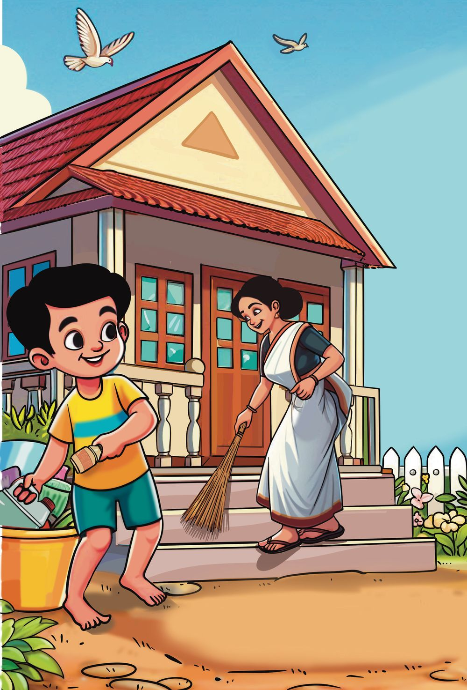
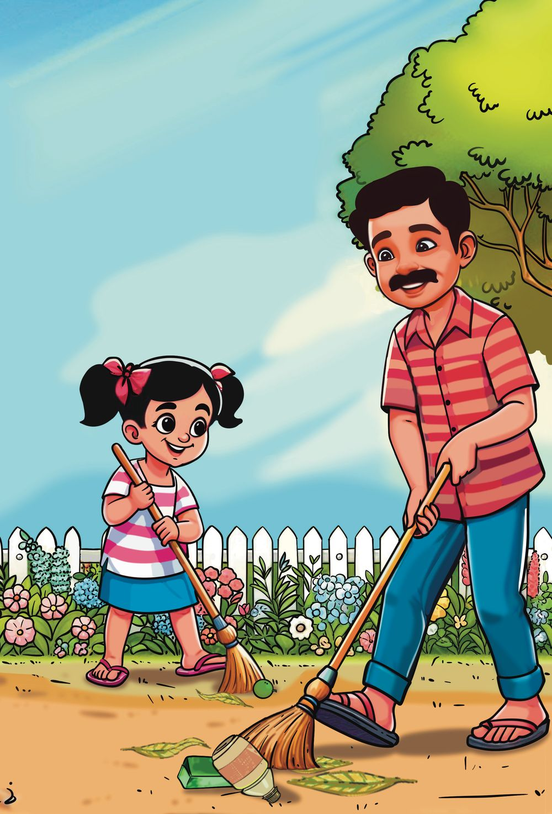
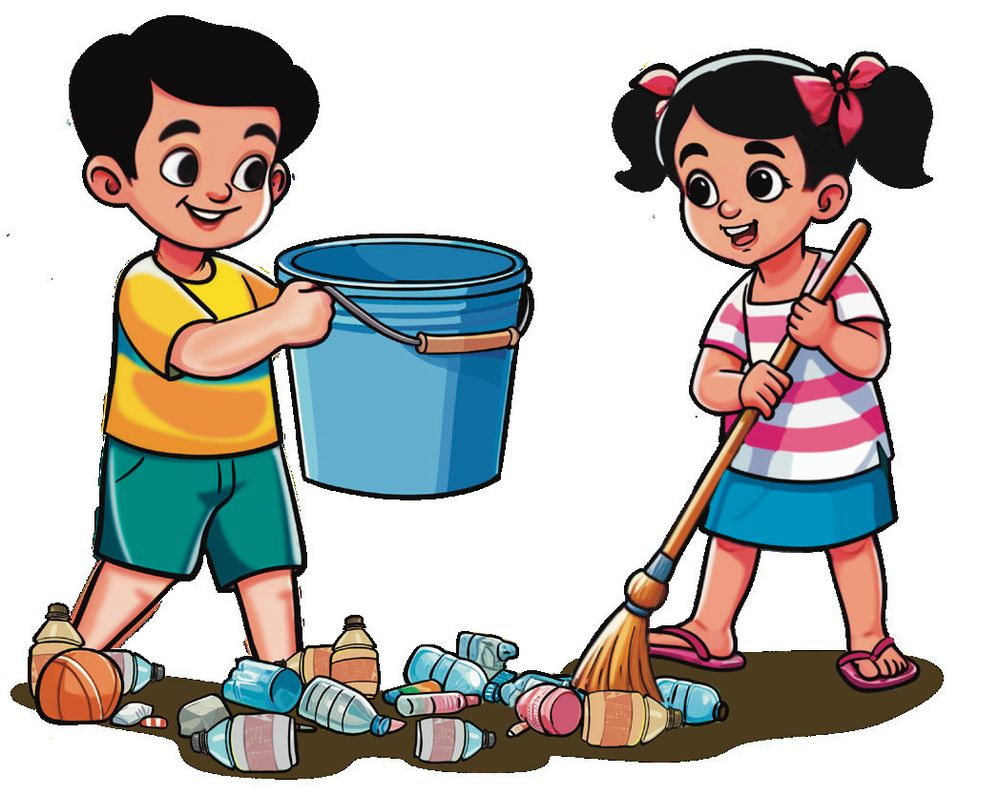
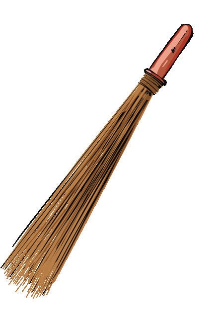
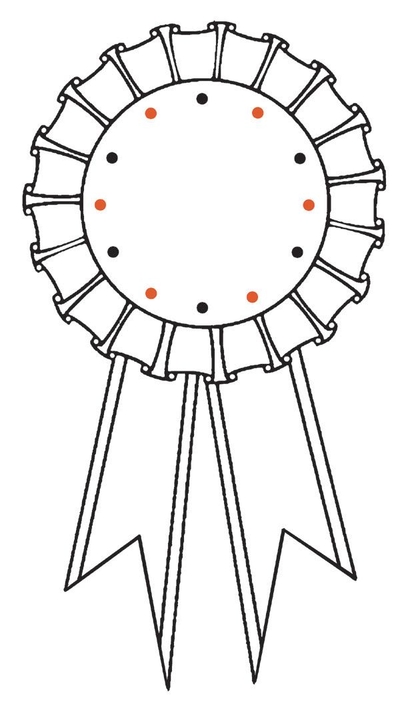
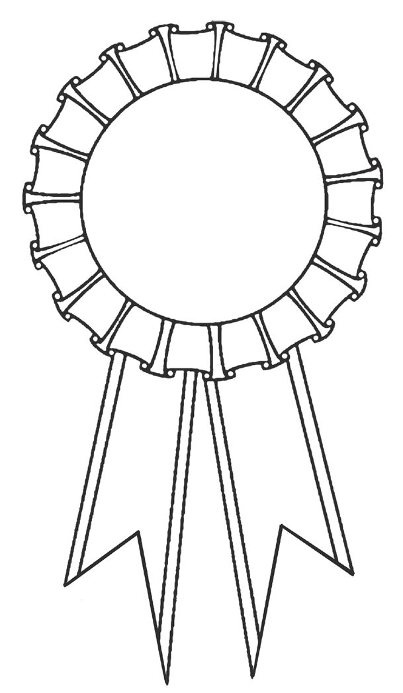
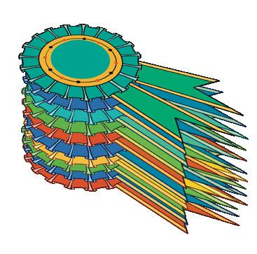
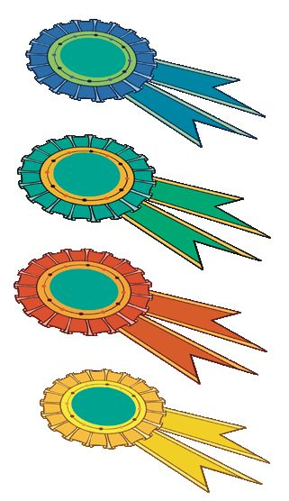
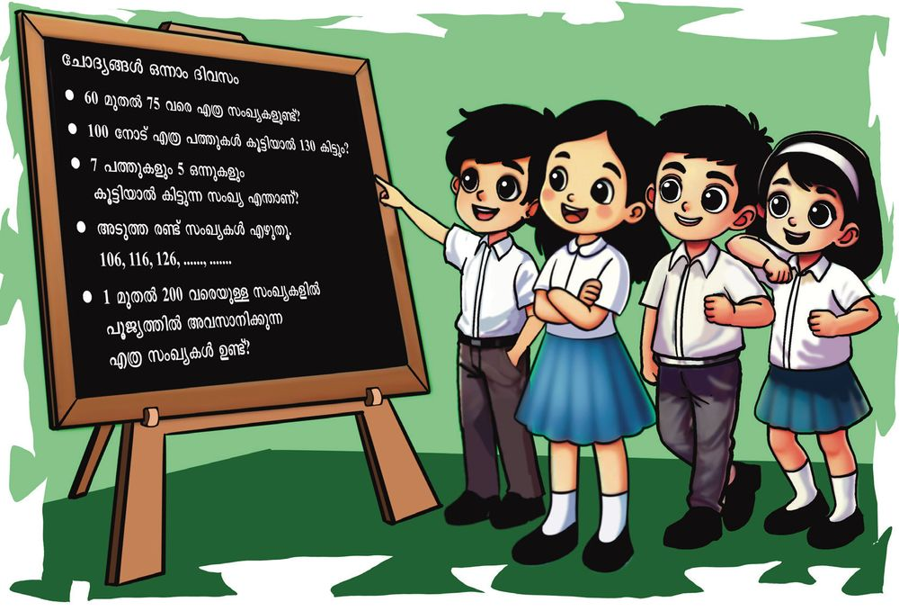

36
ഗണിതം 2
സ്റ്റാൻഡേർഡ്
വലിയറ ഗ്രാമപഞ്ചായത്തിലെ വീടുകളിൽ ശുചിത്വവ മത്സരമാണ്. ഇത്തവണ ഒന്നാം സ്ഥാനം നേടണം. റൈഹാനും റിയയും അച്ഛനും അമ്മയ്ക്കുമൊൊപ്പം വീട് വൃത്തിയാക്കാൻ തുടങ്ങി.


36
ഗണിതം 2
സ്റ്റാൻഡേർഡ്
വലിയറ ഗ്രാമപഞ്ചായത്തിലെ വീടുകളിൽ ശുചിത്വവ മത്സരമാണ്. ഇത്തവണ ഒന്നാം സ്ഥാനം നേടണം. റൈഹാനും റിയയും അച്ഛനും അമ്മയ്ക്കുമൊൊപ്പം വീട് വൃത്തിയാക്കാൻ തുടങ്ങി.


3
3
യൂണിറ്റ്
നല്ല നാടിനായ്... നല്ല നാളേക്കായ്...
നല്ല നാടിനായ്... നല്ല നാളേക്കായ്...
37


റൈഹാനും റിയയും ഇപ്പോോഴെത്തും. ഞാൻ റെഡി.
വരാന്തയെല്ലാം ഞാൻ വൃത്തിയാക്കും.
ചപ്പു ചവറുകൾ ഞാൻ കോോരിയെടുക്കും.
വലിയറ ഗ്രാമപഞ്ചായത്ത് ശുചിത്വവ മത്സരം പ്രിയരേ, നമ്മുടെ വലിയറ ഗ്രാമപഞ്ചായത്തിനെ സമ്പൂർണ്ണ ശുചിത്വവ പഞ്ചാ യത്താക്കി മാറ്റാൻ തീരുമാനിച്ചിരിക്കുകയാണ്. മുഴുവൻ വീടുകളുംം സ്ഥാപനങ്ങളുംം ഇതിൽ പങ്കെടുക്കണം. നന്നായി വൃത്തിയാക്കു ന്നവർക്ക് സമ്മാനങ്ങൾ നൽകുന്നതായിരിക്കും. നമ്മുടെ നാട് വൃത്തിയുള്ള നാടാക്കി മാറ്റാൻ എല്ലാവരുംം സഹകരിക്കണമെന്ന് അഭ്യയർഥിക്കുന്നു. എന്ന്, പ്രസിഡന്റ്, വലിയറ ഗ്രാമപഞ്ചായത്ത്. 38
ഗണിതം 2
സ്റ്റാൻഡേർഡ്




സാധനങ്ങൾ വാങ്ങാം.
പ്ലാസ്റ്റിക് സാധനങ്ങൾ വേറെ വയ്ക്കണം. ഹരിത കർമ്മസേനയ്ക്ക് കൊൊടുക്കാം. വീട് വൃത്തിയാക്കാൻ അവർ വാങ്ങിയ സാധനങ്ങളുടെ വില നോോക്കൂ. മിന്നു 2 ലോോഷൻ വാങ്ങി. ഞാൻ കണക്കാക്കിയത്.
വിലവിവരം
ലോോഷൻ 20 രൂപ സോോപ്പ്
10 രൂപ
മോോപ്പ്
60 രൂപ
ചൂല്
30 രൂപ
20 + 20 =
രൂപ.
20ന്റെ ഇരട്ടിയാണല്ലോോ 40.
ഒരു സംഖ്യയയോോട് അതേ സംഖ്യയ കൂട്ടിയാൽ ഇരട്ടി ആകും.
ആമി 5 സോോപ്പ് വാങ്ങി.
എത്ര രൂപയായി?
എങ്ങനെ കണക്കാക്കിയെന്ന് പറയൂ. മോോപ്പിന്റെ വില രൂപ. +
=
രൂപ. 3
യൂണിറ്റ്
രണ്ട് ചൂലിന്റെ വില.
നല്ല നാടിനായ്... നല്ല നാളേക്കായ്...
39

ഗൃഹസന്ദർശനം ഹരിതകർമ്മസേനയിലെ പ്രിയയും കവിതയും വീടുകളിൽ നിന്നും മാലിന്യം ശേഖരിക്കുകയാണ്. 45 മുതൽ 99
വരെ നമ്പരുള്ള വീടുകളിൽ നിന്നും ഇന്ന് ശേഖരിക്കണം.
45
46
47
48
49
50
51
52
45 മുതൽ 57 വരെയുള്ള
വീടുകളിൽ നമ്മൾ കയറി.
എത്ര വീടുകളിൽ കയറി?
53
54
55
56
57
ഇനി 58 മുതൽ 99 വരെ ബാക്കി യുണ്ട്. എത്ര വീടുകൾ ബാക്കി?
58 മുതൽ 99വരെ ക്രമത്തിൽ എഴുതൂ. 58 59 60 61
69 70 71
99 40
ഗണിതം 2
സ്റ്റാൻഡേർഡ്


വീടുകളിൽ ഒട്ടിക്കാൻ ബാക്കിയുള്ള സ്റ്റിക്കറുകൾ ക്രമമായി വയ്ക്കുകയാണ് കവിത.
84
94
89
85
91
87
90
98
93
96
86
88 95 99
92
97
അപ്പോോൾ കൂട്ടുകാരെത്തി. ഓരോോരുത്തരുംം എടുത്ത സംഖ്യയകൾ അവർ ഉറക്കെ വായിച്ചു. 84
93
എൺപത്തിനാല് 78
85
.....................................
തൊൊണ്ണൂറ്റി എഴ്
ക്രമത്തിൽ എഴുതൂ.
3
യൂണിറ്റ്
84
നല്ല നാടിനായ്... നല്ല നാളേക്കായ്...
41

സംഖ്യാകാർഡുകൾ റൈഹാനും റിയയും വീടുവൃത്തിയാക്കുമ്പോോൾ ഒരു സഞ്ചി കിട്ടി. നിറയെ സംഖ്യാ കാർഡുകൾ ആണല്ലോോ.
ചുവന്ന കാർഡുകളുംം നീലക്കാർഡു കളുംം ഉണ്ട്.
50
8
1
9
3
5
40
4
70
7
80
60
2
6
ഒരു ചുവപ്പുകാർഡിലെ സംഖ്യയയും ഒരു നീലക്കാർഡിലെ സംഖ്യയയും കൂട്ടി അവർ സംഖ്യയകൾ ഉണ്ടാക്കി. അവ നോോക്കൂ. 57
81
68
79
47
ഇവ ചെറുതിൽ നിന്ന് വലുതിലേക്ക് എഴുതൂ
നിങ്ങൾ ഇതുപോോലെ സംഖ്യയകൾ ഉണ്ടാക്കൂ.
ഇവ വലുതിൽ നിന്ന് ചെറുതിലേക്ക് എഴുതൂ.
42
ഗണിതം 2
സ്റ്റാൻഡേർഡ്


ഇതുപോോലെ കാർഡുകളിലെ സംഖ്യയകൾ കൂട്ടി മറ്റു സംഖ്യയകൾ എഴുതൂ.
ഒന്നുകളുംം പത്തുകളുംം ശുചിത്വവക്ലബ് അംഗങ്ങൾ പേപ്പർ സ്ട്രോോ ഉണ്ടാക്കി. അവ 10 എണ്ണം വീതമുള്ള കെട്ടുകളാക്കിയും അല്ലാതെയും വച്ചു. ഓരോോരുത്തരുംം വച്ചത് നോോക്കൂ. എണ്ണം എഴുതൂ. ശ്രീഷ
4 പത്തും 5 ഒന്നും. 40 ഉം 5 ഉം
അനിക
.....പത്തും 3 ഒന്നും. ......ഉം 3 ഉം
നന്ദു
.....പത്തും.... ഒന്നും. ...... ഉം ...... ഉം
ആരുഷ്
.....പത്തും... ഒന്നും. ..... ഉം ..... ഉം
45
3
യൂണിറ്റ്
എണ്ണം ചെറുതിൽ നിന്ന് വലുതിലേക്ക് ക്രമമായി എഴുതൂ.
നല്ല നാടിനായ്... നല്ല നാളേക്കായ്...
43


ഒന്നിച്ചുവച്ചപ്പോോൾ അദ്വിതയും നന്ദുവും ഉണ്ടാക്കിയ പേപ്പർ സ്ട്രോോകൾ നോോക്കൂ.
അദ്വിത എത്ര പേപ്പർ സ്ട്രോോ ഉണ്ടാക്കി? നന്ദു എത്ര പേപ്പർ സ്ട്രോോ ഉണ്ടാക്കി? ആകെ എത്ര സ്ട്രോോ ഉണ്ടാക്കി? എങ്ങനെ കണക്കാക്കി?
ചങ്ങാതി കണക്കാക്കിയതെങ്ങനെ? പറയൂ. എഴുതൂ.
44
ഗണിതം 2
സ്റ്റാൻഡേർഡ്



ബാഡ്ജ് ഉണ്ടാക്കാം. ശുചിത്വവക്ലബ് അംഗങ്ങൾക്കായി ബാഡ്ജ് ഉണ്ടാക്കി. അവയ്ക്ക് നിറം കൊൊടുത്ത് ഭംഗിയാക്കൂ.
ബാഡ്ജിലെ സംഖ്യയകൾ ക്രമമായി വരച്ചു യോോജിപ്പിക്കൂ. എഴുതൂ. 95
50 55
90
60
85
65
80
75 70
78 78 56 58 76 60 74
62 64 72 70 68 66
3
യൂണിറ്റ്
50
നല്ല നാടിനായ്... നല്ല നാളേക്കായ്...
45






സാവനും കൂട്ടുകാരുംം ബാഡ്ജുകൾ അടുക്കിവയ്ക്കുകയാണ്. 50 എണ്ണം എടുത്തുവച്ചു.
ബാക്കിയുള്ളവ കൂടി ചേർത്ത് എണ്ണിവയ്ക്കുകയാണ്. 50 ഉം 1 ഉം 51 51 ഉം 1 ഉം 52 50 + 1 = 51 51 + 1 = 52 52 + 1 = 53 53 + 1 = 54 ........................ ........................
നിവേദ് ഇങ്ങനെയാണ് എഴുതിയത്.
........................ ........................
സഫ എഴുതിയത് മറ്റൊൊരു രീതിയിലാണ്.
50 + 1 = 51 50 + 2 = 52 50 + 3 = 53 50 + 4 = 54 ........................... ........................... ........................... ...........................
46
ഗണിതം 2
സ്റ്റാൻഡേർഡ്


60 ബാഡ്ജുകളാണ് അടുക്കിവച്ചത്. 60 നെ പലവിധത്തിലാണ് ഓരോോരുത്തരുംം പറഞ്ഞത്. 6
50 + 10
59 ഉം 1 ഉം
പത്തുകൾ.
ചേർന്നത്.
50 + 5 + 5
70 ൽ നിന്ന് 10
ഇടയി
ിൽ
കുറഞ്ഞത്.
59 നും
61 നും
എഴുതിനോോക്കൂ.
59
+1
3
യൂണിറ്റ്
50 നെ
ക്കാ ാൾ
10
കൂ ടു
തൽ
60
നല്ല നാടിനായ്... നല്ല നാളേക്കായ്...
47


ശുചിത്വവവീട് ശുചിത്വവവീട് മത്സരത്തിൽ കൂടുതൽ മാർക്ക് കിട്ടിയ 5 വീടുകളുടെ പട്ടിക നോോക്കൂ. ആദ്യയത്തെ 5 സ്ഥാനങ്ങൾ കണ്ടുപിടിച്ച് പട്ടികയിൽ എഴുതൂ. വീട്ടുപേര്
മാർക്ക്
സ്ഥാനം
നീലാംബരി ശ്രീപഥം തണൽ അതിഥി മേഘാമൃതം
89
ഒന്ന് രണ്ട് മൂന്ന് നാല് അഞ്ച്
68 99 90 71
വീട്ടുപേര്
മാർക്ക്
ഒന്നാം സ്ഥാനത്തിന് കിട്ടിയ മാർക്ക് എത്രയാണ്? ഇത് രണ്ടാം സ്ഥാനത്തിനെക്കാൾ എത്ര കൂടുതലാണ്? ഒന്നും മൂന്നും സ്ഥാനങ്ങൾ തമ്മിൽ എത്ര മാർക്ക് വ്യയത്യാസം ഉണ്ട്? ആകെ എത്ര രണ്ടക്ക സംഖ്യയകളുണ്ട്?
48
ഗണിതം 2
സ്റ്റാൻഡേർഡ്
രണ്ടക്കമുള്ള ഏറ്റവും ചെറിയ സംഖ്യയ 10 ആണ്.
രണ്ടക്കമുള്ള ഏറ്റവും വലിയ സംഖ്യയയല്ലേ 99.


ശുചിത്വവവീട് മത്സരത്തിൽ അമേയയുടെ വീടിനാണ് ഒന്നാം സ്ഥാനം. 99 മാർക്കാണ് കിട്ടിയത്. ഒരു എല്ലാവരുംം സന്തോോഷിച്ചു. മാർക്കുകൂടി കിട്ടിയിരുന്നെ ങ്കിൽ.
ഒരു മാർക്കുകൂടി കിട്ടിയാൽ എത്ര മാർക്ക് ആകും? 9 പത്തും 9 ഒന്നും 99 ഒന്നുകൂടി ചേർന്നാൽ 99 ഉം 1 ഉം നൂറ് 99 + 1 = 100 10 + 10 + 10 + 10 + 10 + 10 + 10 + 10 + 10 + 10 .... + 10
ഏറ്റവും ചെറിയ മൂന്നക്ക സംഖ്യയ
99+1
95+5
50+50
6 പത്ത്
50 60
7 പത്ത് 8 പത്ത്
70 80
9 പത്ത്
90
10 പത്ത്
100
3
നല്ല നാടിനായ്... നല്ല നാളേക്കായ്...
യൂണിറ്റ്
5 പത്ത്
49

നീ വരു മ്പോോൾ ഞാൻ പോോകേണ്ടി വരുമല്ലോോ.
നൂറിനപ്പുറത്തേക്ക് ഞാൻ നിന്നോോടൊൊപ്പം നിന്നോോട്ടെ.
വന്നോോളൂ...
1
101 നൂറുംം ഒന്നും
0 0 1
1
നൂറ്റി ഒന്ന്
0 01
100+1
0 0 4
1 1
0 04
100 കഴിഞ്ഞുവരുന്ന 100 ഉം 5 ഉം 105
50
അടുത്ത സംഖ്യയ
101
100 + 9 = 109
100 + 1 = 101 101 + 1 = 102 102 + 1 = 103 103 + 1 = 104
100 + 1 = 101 100 + 2 = 102 100 + 3 = 103 100 + 4 = 104
.................................
.................................
.................................
.................................
.................................
.................................
.................................
.................................
.................................
.................................
.................................
.................................
ഗണിതം 2
സ്റ്റാൻഡേർഡ്

109 നോോട് 1 ചേർന്നാൽ എത്രയാകും?
നൂറ്റിപ്പത്ത്
1 0 0
100 + 10 = 110
1 0
109 + 1 = 110
1 01 0 100 ഉം 20 ഉം ചേർന്നാൽ 120. 100 ഉം 30 ഉം ചേർന്നാൽ 130.
109 നോോട് 1 ചേർന്നാലും 100 നോോട് 10 ചേർന്നാലും 110 തന്നെ. 100 നെക്കാൾ 40 കൂടിയ സംഖ്യയ 140.
100 + 80 = 180
3
യൂണിറ്റ്
11 പത്തുകൾ ആണ്. 110
നല്ല നാടിനായ്... നല്ല നാളേക്കായ്...
51


സംഖ്യയകൾ എഴുതാം. മോോളേ സ്റ്റിക്കറിൽ നമ്പർ എഴുതാമോോ? ചില സംഖ്യയകൾ എഴുതിയിട്ടില്ല. അവ എഴുതി ചേർക്കാം.
101 102 103
105
107
110
111
119 122
124
128
130
137 146
150
നിറമുള്ള കളത്തിലെ സംഖ്യയകൾ തമ്മിലുള്ള ബന്ധം എന്താണ്?
5 വീതം കൂടിവരുന്ന 5 സംഖ്യയകൾക്ക് മഞ്ഞ നിറം കൊൊടുക്കൂ.
എല്ലാവരുംം നിറം കൊൊടുത്തത് ഒരേ സംഖ്യയകൾക്കാണോോ? 52
ഗണിതം 2
സ്റ്റാൻഡേർഡ്


150 ന് ശേഷമുള്ള സംഖ്യയകളിൽ
വിട്ടുപോോയവ എഴുതിച്ചേർക്കൂ. 151
161
171
152 153
192 163
183 174
194
165
195
156
199 ഉം 1 ഉം 199 + 1 = 200
186
നൂറുംം നൂറുംം കൂട്ടിയാൽ...
197 158
160
169 190
200
190 ഉം 10 ഉം കൂട്ടിയാലോോ?
അമ്മേ ഇതൊൊന്നു പറഞ്ഞുതന്നേ... പ്ലീസ്....
190 എന്നാൽ 100 ഉം 90 ഉം. 190 നോോട് 10 കൂട്ടുമ്പോോൾ 100 ഉം 90 ഉം 10 ഉം 100 + 90 + 10 100 ഉം 100 ഉം ഇരുന്നൂറ്. 100 + 100 = 200
3
യൂണിറ്റ്
159
178
നല്ല നാടിനായ്... നല്ല നാളേക്കായ്...
53

ക്രമത്തിൽ എഴുതാം. അശ്വിനി നമ്പരുകൾ ക്രമമായി എഴുതി. മറ്റുള്ളവ കണ്ടുപിടിച്ച് ഇതേ ക്രമത്തിൽ എഴുതൂ. 110
120 130 140
മോോൾക്ക് പറയാമോോ?
ഇനി ഞാൻ മറ്റൊൊരു തരത്തിൽ പറയാം.
100 + 10 = 110 110 + 10 = 120 120 + 10 = 130
100 + 10 = 110 100 + 20 = 120 100 + 30 = 130 100 + 40 = 140 100 + 50 = 150 100 + 60 = 160 ............................... ............................... ............................... 100 + 100 = 200
54
ഗണിതം 2
സ്റ്റാൻഡേർഡ്


ഗണിത ക്വിസ് ഗണിതക്ലബിന്റെ ബോോർഡിൽ ചോോദ്യയങ്ങൾ എഴുതിയത് നിമിഷയും കൂട്ടുകാരുംം വായിച്ചു. ഉത്തരം എഴുതൂ.
3
യൂണിറ്റ്
കൂടുതൽ ചോോദ്യയങ്ങൾ കണ്ടുപിടിച്ച് എഴുതൂ. ഉത്തരവും എഴുതണേ.
നല്ല നാടിനായ്... നല്ല നാളേക്കായ്...
55